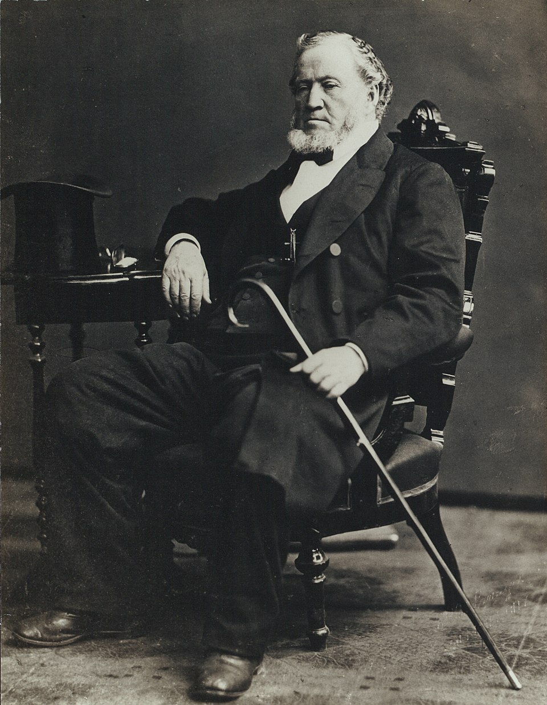
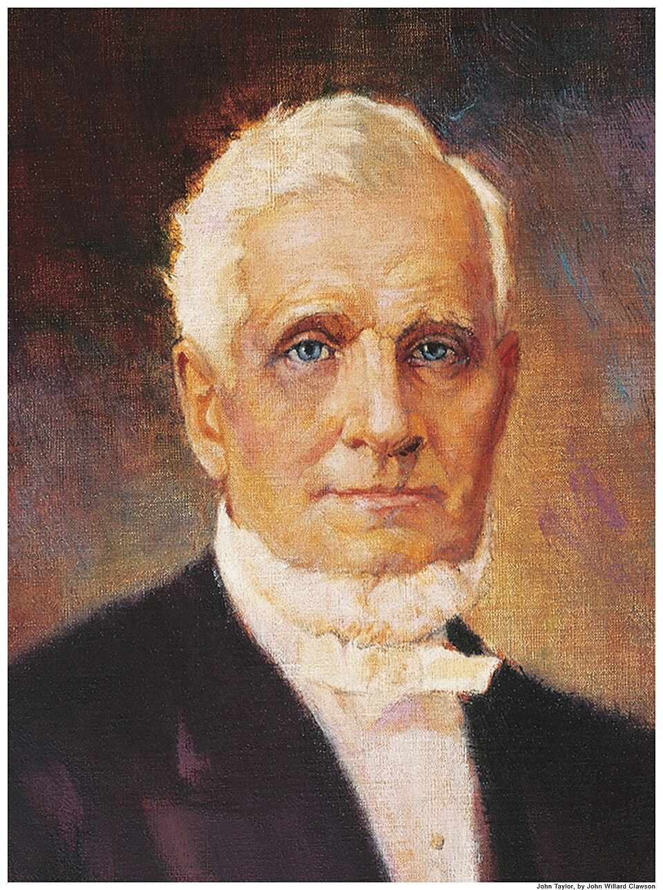

Contents:

"If this people would be careful not to do anything to displease the spirits of those who have lived on the earth, and have been justified, and have gone to rest, and would so conduct themselves, that no reasonable being upon the face of the earth could find fault with them, what kind of society should we have? Why every mans mouth would be filled with blessings, every mans hand would be put forth to do good, and every woman and child in all their intercourse would be praising God, and blessing each other. Would not Zion be here?" (JoD 1:4)
"...if every heart were set upon doing right, we then should have Zion here."
"I live and walk in Zion every day, and so do thousands of others in this Church and kingdom, they carry Zion with them, they have one of their own, and it is increasing, growing, and spreading continually" (JoD 1:4)
"Brother Kimball has known me thirty years, twenty one of which I have been in this Church; others have known me twenty years; and there are some here who knew me in England; I had Zion with me then, and I brought it with me to America again, and I now appeal to every man and woman if I have not had Zion with me from first entering into the Church, to the present time!" (JoD 1:6)
Sample Sample Sample Sample Sample Sample Sample Sample Sample Sample Sample Sample Sample Sample Sample Sample Sample Sample Sample Sample Sample Sample Sample Sample Sample Sample Sample Sample Sample Sample Sample Sample Sample Sample Sample Sample Sample Sample Sample Sample Sample Sample Sample Sample Sample Sample Sample Sample Sample Sample Sample Sample Sample Sample Sample Sample Sample Sample Sample Sample Sample Sample Sample Sample Sample Sample Sample Sample Sample Sample Sample Sample Sample Sample Sample Sample Sample Sample Sample Sample
Sample Sample Sample Sample Sample Sample Sample Sample Sample Sample Sample Sample Sample Sample Sample Sample Sample Sample Sample Sample Sample Sample Sample Sample Sample Sample Sample Sample Sample Sample Sample Sample Sample Sample Sample Sample Sample Sample Sample Sample Sample Sample Sample Sample Sample Sample Sample Sample Sample Sample Sample Sample Sample Sample Sample Sample Sample Sample Sample Sample Sample Sample Sample Sample Sample Sample Sample Sample Sample Sample Sample Sample Sample Sample Sample Sample Sample Sample Sample Sample Sample Sample Sample Sample Sample Sample Sample Sample Sample Sample Sample Sample Sample Sample Sample Sample Sample Sample
Still Brigham Young


"The speaker then dwelt for some time upon those revelations contained in the Book of Doctrine and Covenants in reference to the temporal affairs of the Saints. The principles they inculcate were of a nature to exalt the poor and humble the rich, and produce other equitable results. He expected to see these laws and principles established among the Saints and he understood that the Zion of God would be built by that divine system."
"If we rely upon human help we will be disappointed. In God lies our only refuge and hope. If we trust in him every cloud will disappear, and the Saints will return to Zion where the Temple, upon which the glory of God is to rest will be reared. The Saints should be governed by the law of God, written upon their hearts. That law will not and does not conflict with the principles of the glorious Constitution of our common country." (Oct 1887, GC)